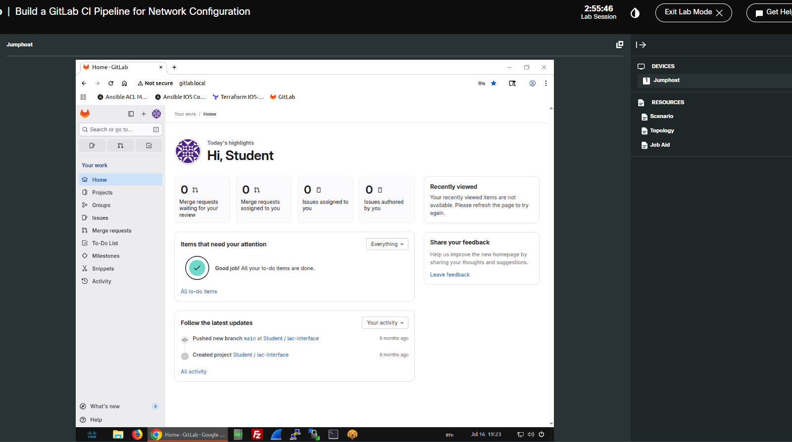
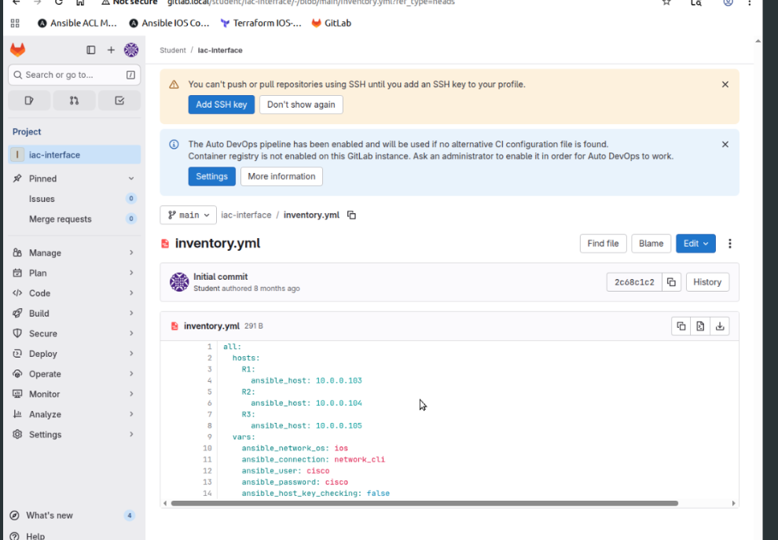
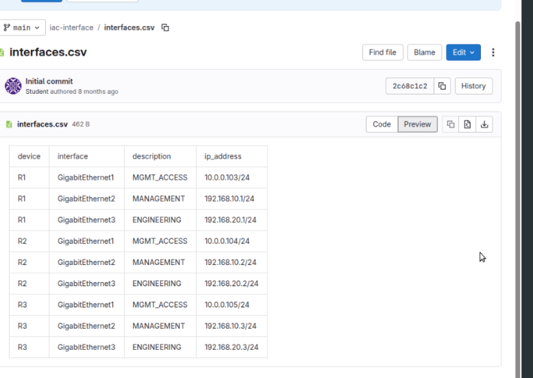
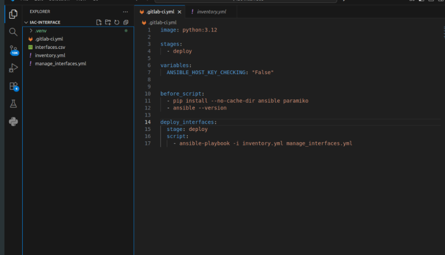
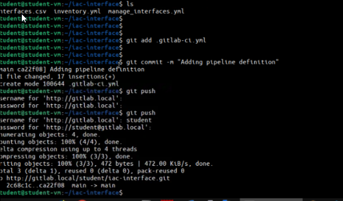
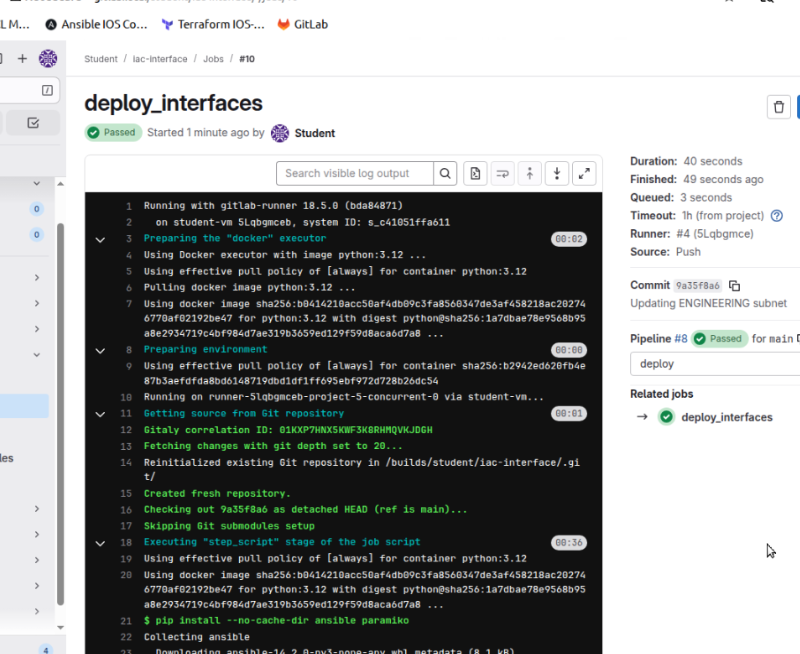
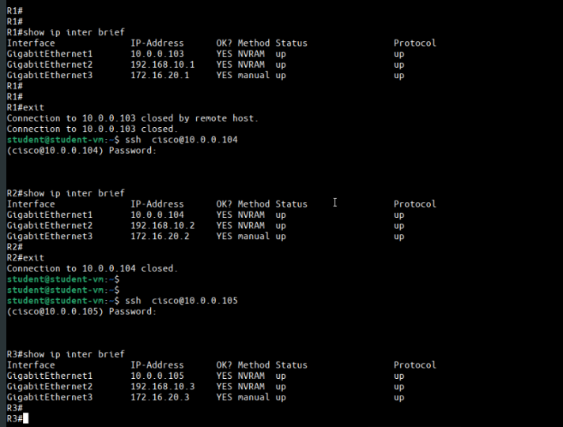
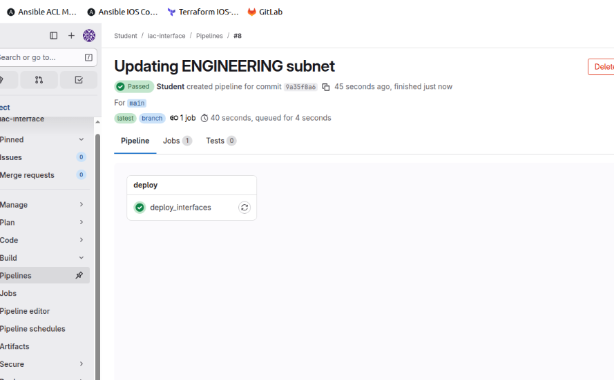

Building a GitLab CI Pipeline for Network Configuration
A Cisco U style automation lab where a CSV source of truth, GitLab CI/CD, and Ansible turned a manual router change into a repeatable pipeline.

What This Lab Was About
The goal was simple: take a network change that would normally be executed manually with Ansible and move it into a GitLab CI/CD workflow.
Before the lab, the workflow was manual: log into the jump host, move into
the right directory, run ansible-playbook, and validate the routers.
After the lab, the workflow became versioned and event-driven: update the CSV,
commit, push, let GitLab start the pipeline, and let the runner execute Ansible.
Repository Structure
The project was intentionally small. That made it perfect for understanding the moving pieces of a network automation pipeline without hiding the logic behind a large framework.
iac-interface/
|-- interfaces.csv
|-- inventory.yml
|-- manage_interfaces.yml
`-- .gitlab-ci.yml
inventory.yml defined R1, R2, R3 and the Ansible network connection settings for the lab.
interfaces.csv acted as the source of truth for interface descriptions and IP addressing.Source of Truth Model
In this lab, interfaces.csv was the desired state. Each row mapped
a device, an interface, a description, and an IP address. Ansible read the CSV,
filtered rows by inventory_hostname, and applied only the data that
belonged to each router.
device,interface,description,ip_address
R1,GigabitEthernet3,ENGINEERING,172.16.20.1/24
R2,GigabitEthernet3,ENGINEERING,172.16.20.2/24
R3,GigabitEthernet3,ENGINEERING,172.16.20.3/24The GitLab CI Pipeline
The pipeline used a single deploy stage. The runner started a Python 3.12 container, installed Ansible and Paramiko, printed the Ansible version, and executed the playbook against the inventory.

image: python:3.12
stages:
- deploy
variables:
ANSIBLE_HOST_KEY_CHECKING: "False"
before_script:
- pip install --no-cache-dir ansible paramiko
- ansible --version
deploy_interfaces:
stage: deploy
script:
- ansible-playbook -i inventory.yml manage_interfaces.ymlCommit, Push, Pipeline
After creating the pipeline definition, the next step was to push it into GitLab. The first attempt reminded me of a small but useful lesson: Git cannot add a file that has not actually been saved yet.

Later, changing the ENGINEERING subnet in interfaces.csv and pushing
the commit triggered the real deployment workflow automatically.
Pipeline Execution
GitLab created the pipeline, assigned the job to the runner, started a Docker
executor with python:3.12, pulled the repository, installed the
dependencies, and ran the Ansible playbook.

deploy_interfaces job passed and produced the operational evidence for the change.Routers updated
Unreachable devices
Failed tasks
What Changed on the Routers
The original ENGINEERING subnet was 192.168.20.0/24. The source of
truth changed it to 172.16.20.0/24. Ansible detected that the
running state did not match the CSV and changed GigabitEthernet3 on R1, R2,
and R3.
R1 GigabitEthernet3 172.16.20.1/24
R2 GigabitEthernet3 172.16.20.2/24
R3 GigabitEthernet3 172.16.20.3/24
Pipeline Summary
The final GitLab view showed the pipeline as passed. That is the main idea of this lab: a network change became a versioned, repeatable, and traceable workflow.

Bootstrap Mental Model
For AUTOCOR-style study, I would summarize the pipeline like this:
interfaces.csv, inventory.yml, and manage_interfaces.yml define what should happen.
ansible-playbook.
What I Would Improve for Production
This was a lab pipeline, not a production design. For production, I would not go directly from push to deploy. A safer workflow would add more gates.
- Move credentials into protected variables or a secrets system.
- Pin dependency versions instead of installing latest packages every run.
- Add branch rules and manual approval before deployment.
- Generate artifacts with command output, diffs, and post-validation evidence.
- Add rollback logic for failed deployments.
The important lesson is not only that Ansible changed an IP address. The real lesson is that a network change can be treated as code: versioned, reviewed, executed by a runner, and validated with evidence.
Comments & Discussion
If you are studying AUTOCOR or building NetDevOps workflows, feel free to share how you would extend this pipeline with validation, approvals, or rollback logic.